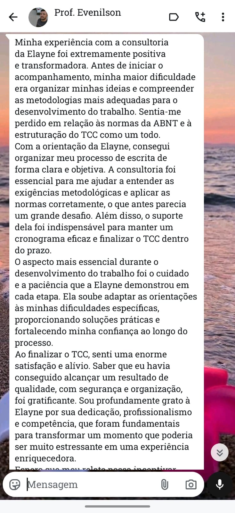
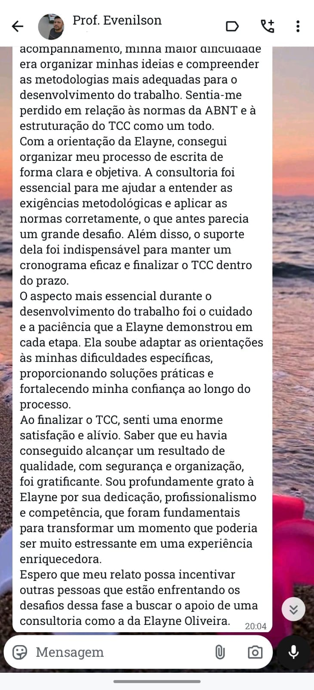
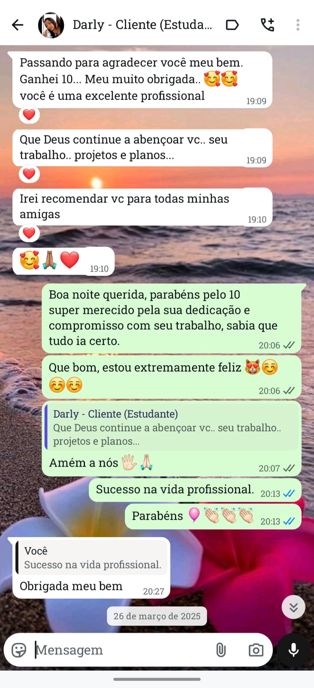
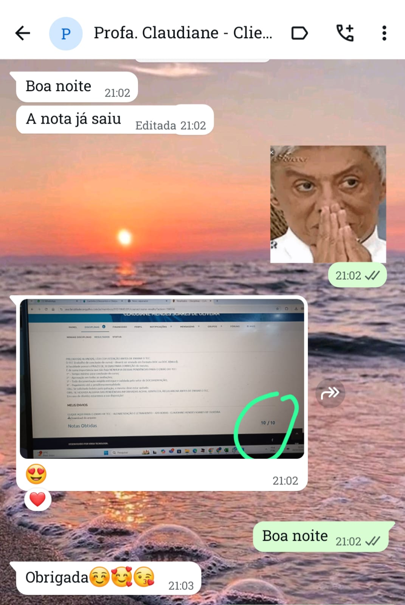
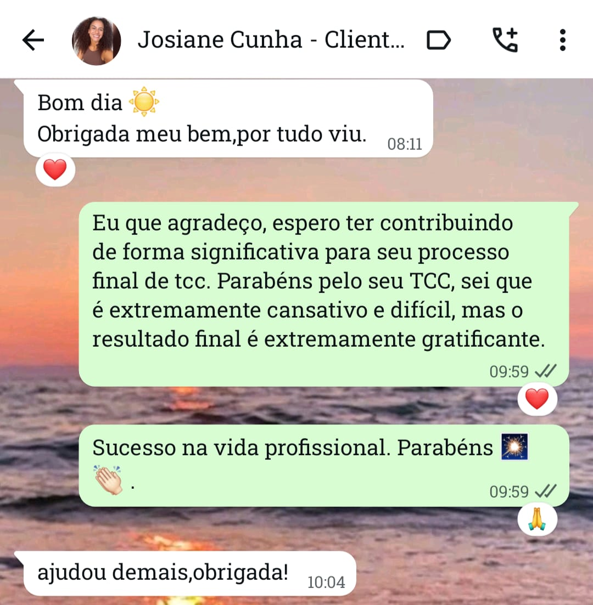
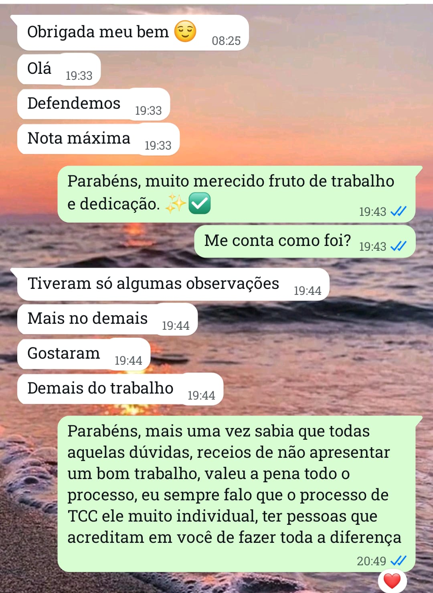
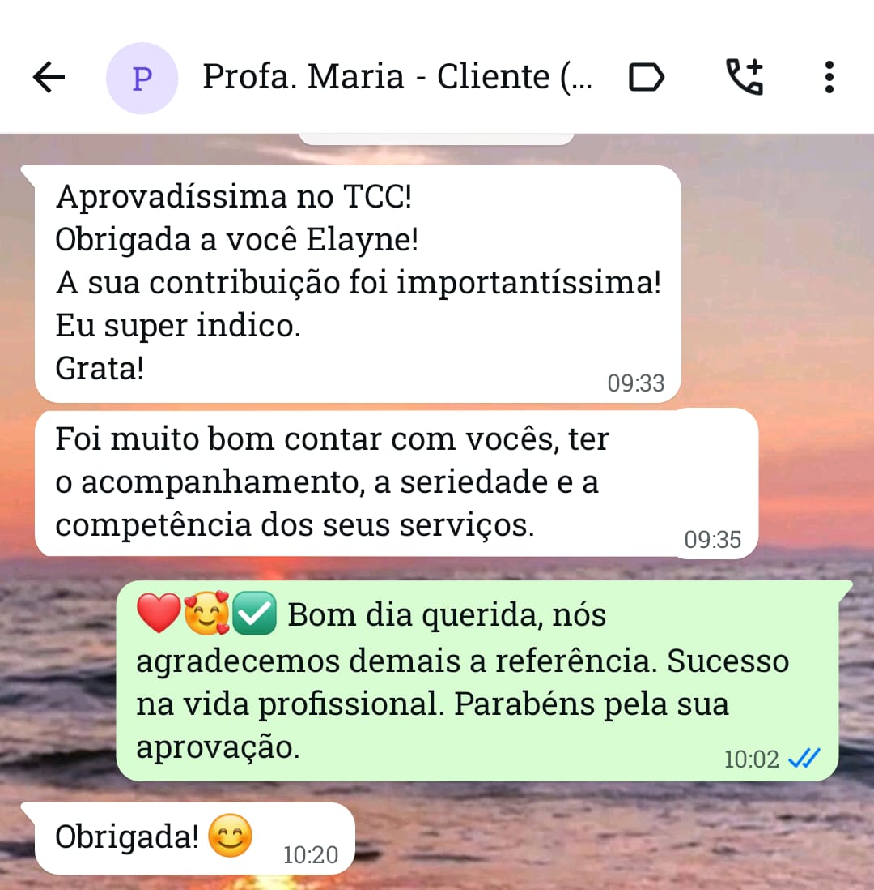
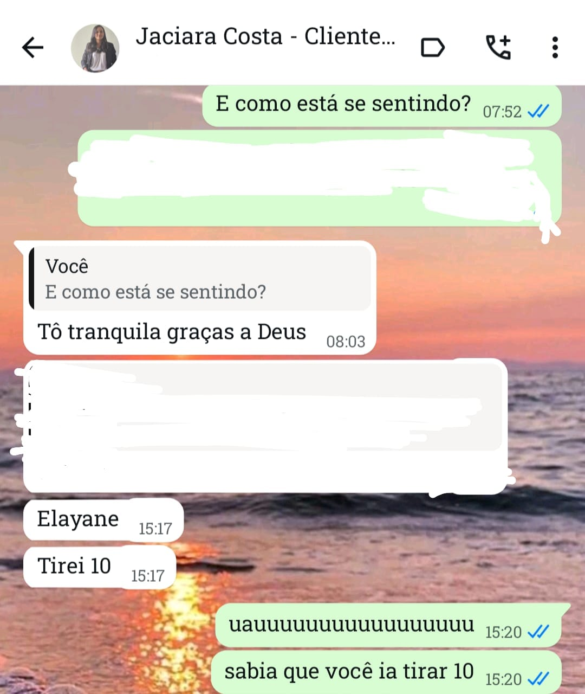
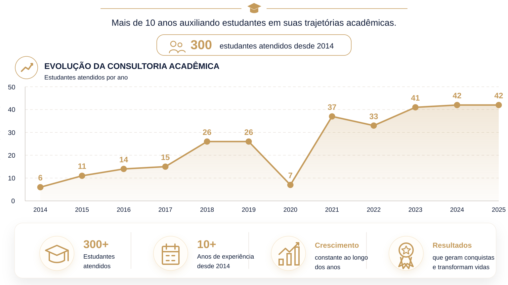

TCC, monografia, artigo e projeto de pesquisa
Apoio na definição do tema, delimitação do problema, estrutura do texto e desenvolvimento de cada etapa do trabalho.
“Consultoria especializada em orientação acadêmica, produção científica e normalização de trabalhos.”
A EO Consultoria Acadêmica atua no apoio a estudantes, professores e pesquisadores em diferentes etapas da produção acadêmica, sempre com responsabilidade, escuta atenta e compromisso com a qualidade.
O trabalho é desenvolvido com base em ética, rigor metodológico e clareza na construção textual, contribuindo para uma experiência acadêmica mais segura, organizada e profissional.
Cada acompanhamento é desenvolvido de forma estratégica, humanizada e personalizada, respeitando os objetivos acadêmicos e profissionais de cada estudante.
Apoio na definição do tema, delimitação do problema, estrutura do texto e desenvolvimento de cada etapa do trabalho.
Acompanhamento no pré-projeto de mestrado, suporte na construção do projeto completo, orientação na escrita, revisão textual e adequação às normas conforme o edital.
Revisão de textos, ajustes estruturais e normalização conforme ABNT para entregar um material mais claro, técnico e bem apresentado.
Orientação na elaboração de relatório de estágio, adequação ao modelo da instituição e revisão conforme normas acadêmicas.
Elaboração de apresentações mais objetivas e reuniões de preparo para defesa com foco em segurança, clareza e organização.
Apoio para cadastro de novo currículo e atualização de registros acadêmicos e profissionais com maior consistência.
Orientação na seleção do periódico, organização dos arquivos e adaptação do manuscrito às normas solicitadas.
Cada atendimento pode ser ajustado ao nível de ensino, cronograma, objetivos e dificuldades específicas do estudante ou pesquisador.
Primeiro conversamos sobre seu curso, etapa acadêmica, prazo, objetivo e principais dificuldades para definir o melhor apoio.
A partir da sua demanda, a consultoria organiza as orientações, revisões ou encontros necessários para destravar o trabalho.
O desenvolvimento acontece com foco em estrutura, método, linguagem acadêmica e segurança na apresentação do material.
A orientação valoriza coerência, estrutura, organização textual e qualidade científica em cada etapa do processo.
O acompanhamento é feito com escuta, paciência e atenção à realidade de cada estudante, professor ou pesquisador.
O trabalho é conduzido com responsabilidade acadêmica, respeito ao processo de aprendizagem e seriedade profissional.
Ao longo desses anos, passaram pela EO Consultoria Acadêmica muitos estudantes, professores e pesquisadores. Aqui estão alguns registros de opiniões e avaliações de clientes que confiaram no meu trabalho e compartilharam suas experiências ao longo do processo de acompanhamento acadêmico.








“São mais do que resultados. São reflexos da diferença que, como consultora, busco fazer na trajetória acadêmica de cada estudante. Mais do que pensar apenas na conclusão do trabalho, acredito na importância de aprender, evoluir e crescer durante todo o processo de escrita. Afinal, cada etapa acadêmica representa uma fase única da vida, marcada por desafios, emoções, descobertas e conquistas que fazem parte da construção pessoal e profissional de cada aluno.”
Mais de 300 estudantes atendidos desde 2014.

“Apoiando sonhos, gerando conquistas e transformando histórias.”Estudantes de graduação e pós-graduação, professores e pesquisadores que precisam de orientação, revisão ou apoio metodológico.
Sim. O contato pode acontecer por mensagem e, quando necessário, por reuniões online, inclusive no Google Meet.
TCC, monografia, artigo científico, projeto de pesquisa, slides acadêmicos, currículo Lattes e etapas relacionadas à apresentação e revisão.
Basta enviar sua necessidade, prazo e tipo de trabalho. A partir disso, a consultoria orienta o formato de atendimento mais adequado.
Se você quer organizar melhor seu projeto, revisar seu texto, preparar sua defesa ou entender como avançar com mais segurança, entre em contato.